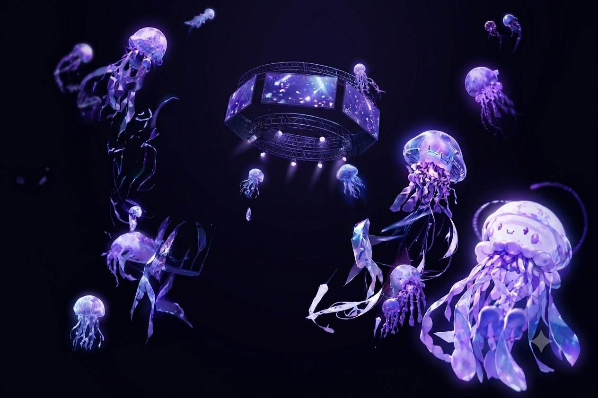
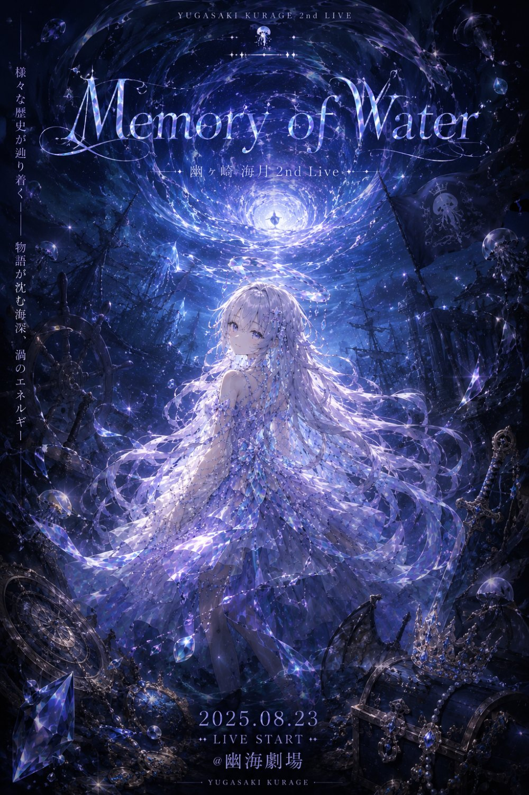

幽ヶ崎 海月 · DEEP PRISM
AE LYRIC MV WORKSHOP
04
PARALLAX
& DEPTH
パララックスと空間演出 — 2.5D
平面のAIイラストを
“空間”
に変える。
奥行きと撮影感で、MVらしさが一気に高まる。
3D LAYER
CAMERA · Z
DOF · LIGHT
4
01
TODAY'S GOALS
今日のゴール
平面のVコンテを“空間のある映像”に進化させる
イラストを
前景・中景・背景
に分解できる
AEで
3Dレイヤー化
し、Z軸に配置できる
カメラワークで
自然なパララックス
を作れる
DOF（被写界深度）
で撮影された質感を作れる
“Flat becomes space.”
動かすのは素材ではなく、カメラ。
4
02
WHAT IS 2.5D
2.5Dとは何か
平面素材を“奥行きのある空間”として扱う技術
✕
3Dモデル不要
モデリングはしない
▤
レイヤー分解
2DをZ軸に配置
▣
カメラで奥行きを生む
カメラを動かすことで、視差＝奥行きが生まれる
“Low cost, high impact.”
MVで最も使われる、低コスト高効果の空間演出。
4
03
DECOMPOSE THE ILLUSTRATION
イラスト分解の考え方
分解の精度が、パララックスの自然さを決める
01
前景 — Foreground
光・花・手前の装飾。動きのアクセントとして重要。
02
中景 — Midground
キャラクター・主要オブジェクト。物語の主役。
03
背景 — Background
空・街・抽象背景。空間の奥を支える。

LAYER SEPARATION
境界が曖昧な部分は“雰囲気優先”で切る
4
04
3D LAYER BASICS
3Dレイヤー化の基本
Z軸の差が“空間の深さ”を作る
X
左右
Y
上下
Z
奥行き
最重要
3Dレイヤーにチェック
空間化スタート
カメラとの距離
見え方が変わる
遠いレイヤーほど
動きが遅い
遠近で
速度差
が出る — それが視差効果。
4
05
BUILDING PARALLAX
パララックスの作り方
奥行き差 × カメラ移動
Background
背景
Z = +500〜+1500
Midground
中景・キャラ
Z = 0
Foreground
前景
Z = -200〜-400
▣ CAMERA — ゆっくり動かすほど自然
急激な動きは
“ゲーム画面”
に見える — ゆっくりが鉄則。
4
06
DEPTH OF FIELD
DOFで撮影感を作る
DOFを使うと“カメラで撮った映像”に近づく
手前にピント →
背景がボケる
背景にピント →
キャラがボケる
ボケは
空間のリアリティ
を作る
⚠ 注意 — CAUTION
強すぎるDOF
“ミニチュア感”が出てしまう。ボケは
ほどほど
に。
4
07
LIGHTING · OPTIONAL
ライトの基礎
ライトは“空気感”を作るための要素
1
平行光源
PARALLEL
太陽光のような均一な光
2
スポットライト
SPOT
ドラマチックな演出
3
影 — SHADOW
CAST
影を落とすと存在感が増す
光の方向が生まれると、画面に
空気
が宿る。

08
LIVE DEMO · 30 SEC
実演：空間化Vコンテ
平面が“空間”に変わる瞬間を見せる
1
▤
3層に分解
FG·MG·BG
2
▣
3Dレイヤー化
3D ON
3
↕
Z軸に配置
DEPTH
4
◎
カメラ＋ヌル
MOVE
5
❋
DOF追加
FOCUS
4
09
WORKSHOP · 30 MIN
ワーク：パララックスVコンテ
Vコンテを“立体的な画面”に進化させる
30秒のVコンテを
空間化
前景・中景・背景の
3層構造
カメラワーク
1つ以上
DOFを使った撮影感
講評ポイント — REVIEW
奥行きの
自然さ
カメラの
滑らかさ
DOFの使い方
レイヤー分解の精度
空間として
破綻していないか
10
HOMEWORK → NEXT
宿題
全曲の
パララックス入りVコンテ
カメラワークを
2箇所以上
DOFを使った撮影演出
1つ以上
NEXT — SESSION 05
コンポジット撮影効果（MVらしさの付与）
◂ スライド一覧へ戻る